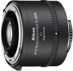
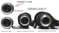

器材库 > 增距镜 > AF-S Teleconverter TC-20E III

详细规格
镜头类型
增距镜
发布日期
2009-12-10
厂家推荐价格
65,100.00 （日元）
增距倍率
2倍
镜头结构
7片/5组
颜色
黑色
尺寸
66 x 48mm
重量
330g
镜头卡口
Nikon AF
备注
含1枚非球面镜片；兼容FX格式
冷光源2011-06-24 01:274 分
操作性 4.50耐用性 4.00性价比 2.50解像力 4.50色彩还原 4.50机械结构 4.00

li晓青2011-05-26 05:174.83 分
操作性 5.00耐用性 5.00性价比 4.50解像力 4.50色彩还原 5.00机械结构 5.00
william622011-05-11 01:134.33 分
操作性 4.50耐用性 4.50性价比 3.50解像力 4.50色彩还原 4.50机械结构 4.50
peterlee2011-05-08 22:114.58 分
操作性 5.00耐用性 5.00性价比 3.50解像力 4.50色彩还原 4.50机械结构 5.00
金陵老夏2011-04-26 00:584.5 分
操作性 5.00耐用性 5.00性价比 3.50解像力 4.50色彩还原 4.50机械结构 4.50
金陵老夏2011-04-26 00:54
ggto2011-02-03 18:054.17 分
操作性 4.50耐用性 4.50性价比 3.00解像力 4.50色彩还原 4.50机械结构 4.00
hanzhaol2011-01-07 16:354.17 分
操作性 5.00耐用性 4.00性价比 3.00解像力 4.50色彩还原 4.50机械结构 4.00
黄色四饼2010-08-13 23:114.42 分
操作性 5.00耐用性 5.00性价比 2.50解像力 4.00色彩还原 5.00机械结构 5.00
xiayz5182010-06-05 20:394 分
操作性 4.50耐用性 5.00性价比 2.00解像力 4.50色彩还原 4.00机械结构 4.00
产品图 / 样片
外观图
评测 / 相关文章
该产品暂无存档的评测文章